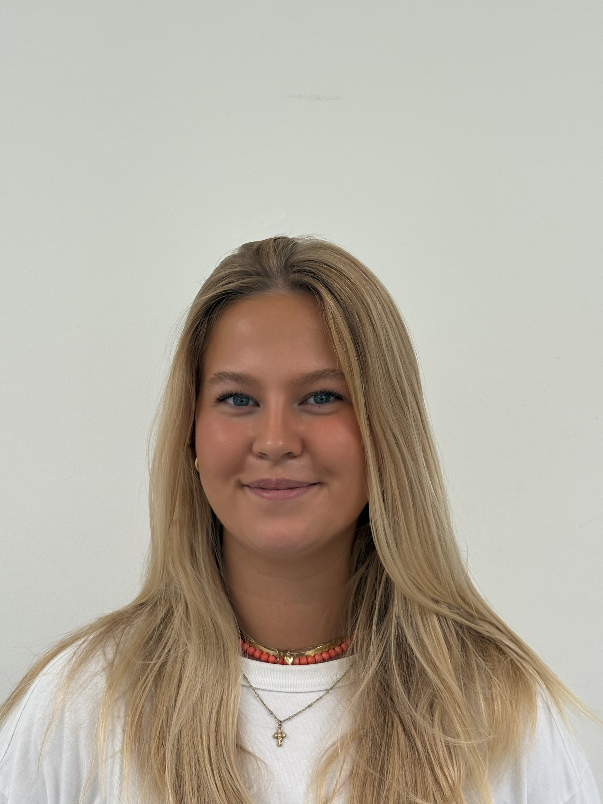
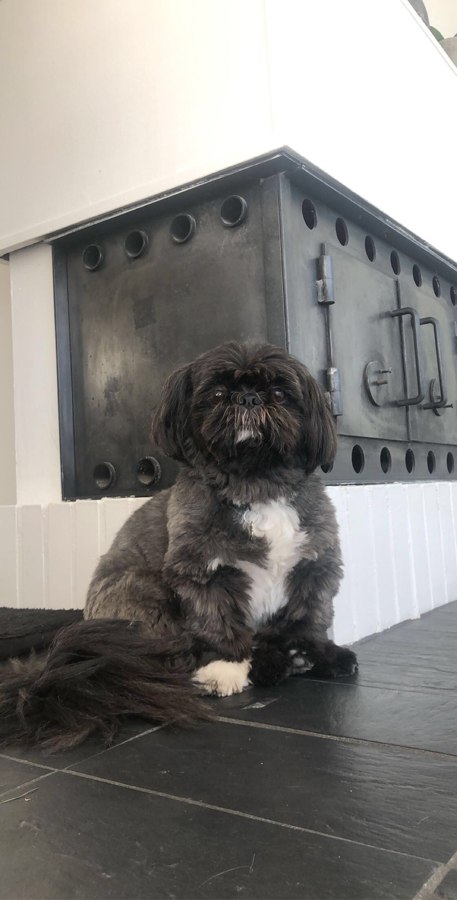

Jeg er 22 år og er lige flyttet til København K med min kusine. I min fritid laver jeg ofte noget kreativt, som at hækle, tegne og male. Jeg bruger også meget tid med mine venner, familie og kæreste. Jeg har en hund der hedder Pepsi, som er rigtig sød.
Jeg syntes multimediedesign, var en god måde at kombinere teknologi med noget kreativt.
Jeg har designet/lavet flere hjemmesider før, blandt andet for et smykkemærke, og så har jeg haft informatik i gymnasiet.
 - Jeg har blandt andet skydivet, bungee jumpet, og cage divet.
- Efter mit sidste dyk fik jeg dykkersyge, og mistede midlertidigt hørelsen.
Instagram: Josefin_Fuchs
Facebook: Josefin Filippa Fuchs
Telefon: 21960009
Email: Jofu0001@stud.ek.dk